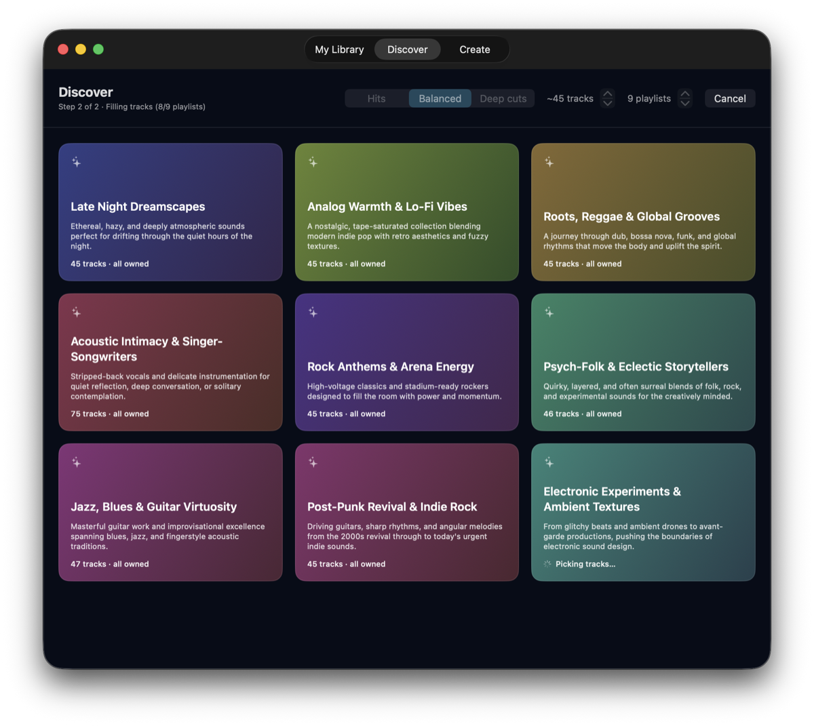
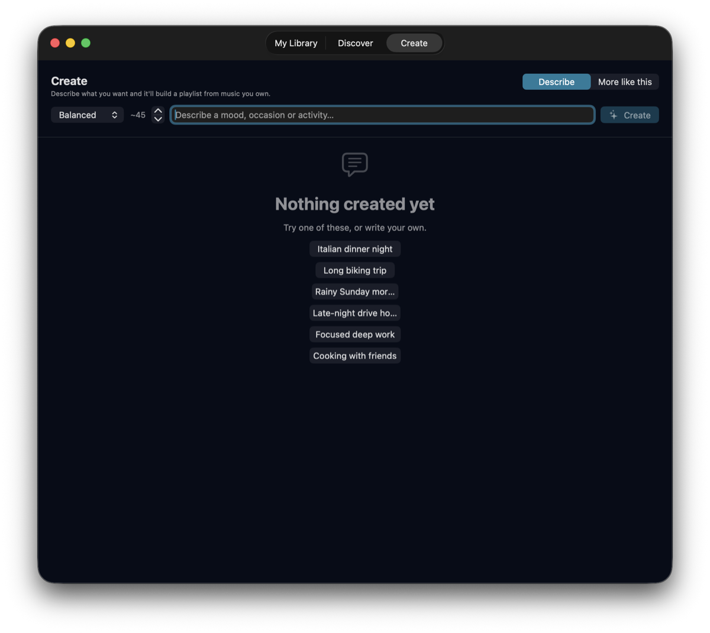
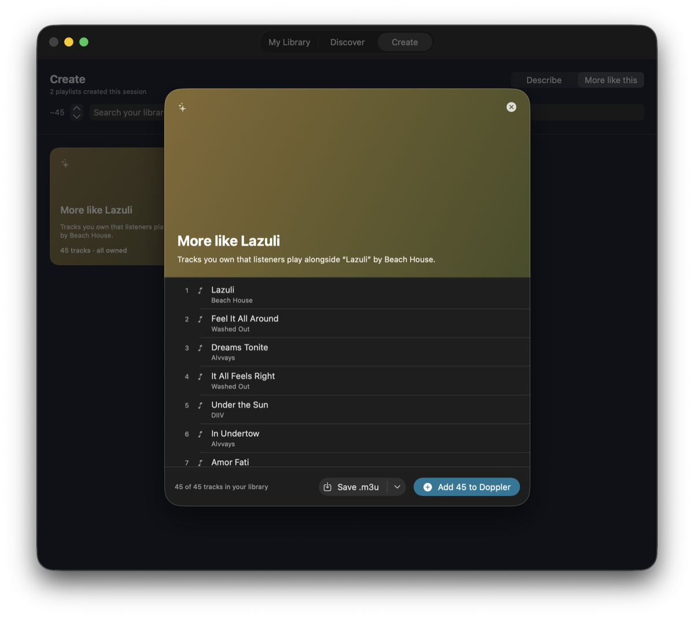
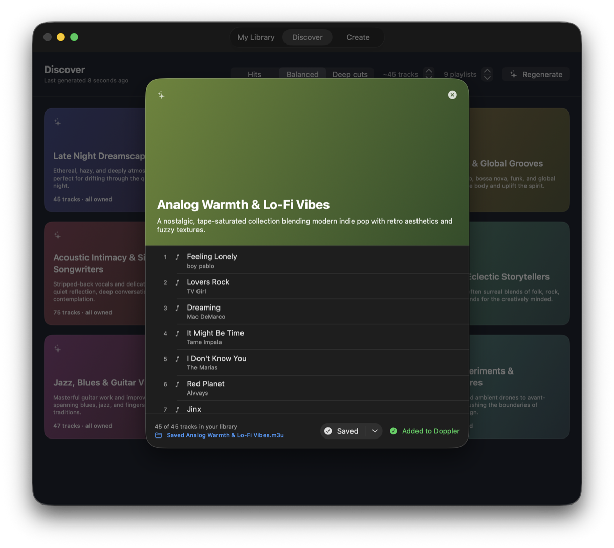
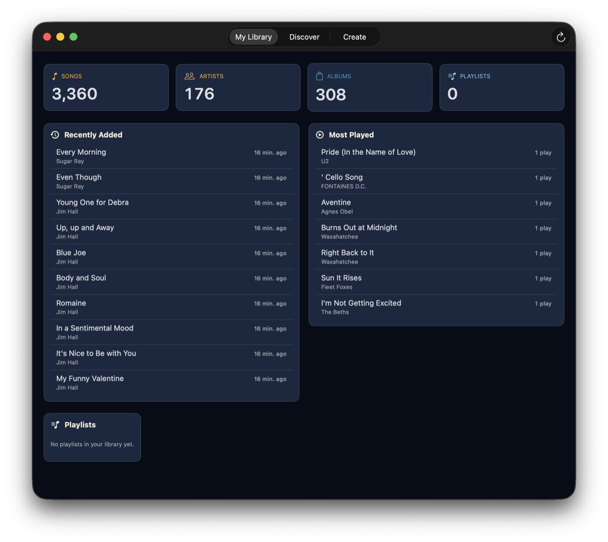

It invents the themes, not just the tracklist
Point it at your library and it comes back with playlist concepts you didn't ask for — built around what you actually listen to. Genre revivals, moods, eras, odd little corners of your collection you'd forgotten were there.
Every track is one you already own. The model picks from a list of your real song titles rather than writing titles from memory, so it cannot recommend music you don't have.
A Hits / Balanced / Deep cuts control decides how well-known the picks should be, using global listen counts rather than asking the model to guess at popularity.

Or describe what you're after
Type a mood, an occasion or an activity — "Italian dinner night", "chill vibe coding tracks", "biking trip" — and it builds a single playlist to match, from the same library.
There's also More like this, which takes one track you like and walks outward through listening data to find music you own that goes with it. That mode uses no language model at all, so it keeps working with LM Studio closed.


Write it back into Doppler, or save an .m3u
Add to Doppler writes a native playlist straight into Doppler's own library, where it sits alongside the ones you made by hand. The write is a single transaction, so a playlist is either fully there or not at all.
Save .m3u drops a standard playlist file into a folder of your choosing in one click, with paths written relative to your music folder so it plays anywhere.
Until you press one of those, the app only ever reads your library.

Your library at a glance
Songs, artists, albums and playlists, plus what you've added recently and what you've actually been playing — read directly from Doppler's own database.
Artist genre tags come from MusicBrainz and track popularity from ListenBrainz, fetched once and cached on disk. Neither service is told who you are.

Your library, your model, your rules
There is no account and no telemetry, and nothing is locked to one vendor. Today the model is one you run yourself; the point is that the choice is yours.
The model is your choice
Today that's any model loaded in LM Studio, on your own machine. Ollama and the hosted APIs are next, so you can use the model you already prefer rather than the one an app picked for you.
Fully offline if you want it
Run a local model and nothing about your library, your listening history or your prompts reaches anyone. Choosing a hosted model later is exactly that — your choice, made explicitly.
Only two outbound lookups
Artist names go to MusicBrainz and track titles to ListenBrainz, once, to learn genres and popularity. Both are cached locally and never repeated.
Read-only until you say so
Browsing, generating and exporting never touch your library. It also refuses to write while Doppler is running, so nothing gets clobbered.
Picks that can't miss
The model replies with numbers into a list of your real tracks rather than retyping titles, so a pick resolves to a song in your library or is discarded.
Tune the run
Choose how many playlists, how many tracks each, how familiar the music should be, and how many requests run at once to suit your model's context.
Open source
MIT licensed, no dependencies beyond the system frameworks. Build it yourself in Xcode, or read exactly what it does to your database.
Coming next: more libraries, more models
MixTape reads Doppler and talks to LM Studio today. Neither is baked in: the app reasons about artists, song titles and listening data, and it talks to models over an ordinary HTTP API. Both ends are meant to open up.
Plex Planned
Generate from the music your Plex server already indexes, and write finished playlists back to it, without moving your collection anywhere.
Jellyfin Planned
The same for Jellyfin, so a fully self-hosted, fully open-source setup gets the same playlists as a local one.
Ollama Planned
A second local option alongside LM Studio, for the many people who already have Ollama running and a model pulled.
OpenAI Planned
Bring your own API key and use a hosted GPT model — worth it when the model you want is bigger than your Mac can hold.
Claude API Planned
The same, for Anthropic's Claude models. Themes are a writing task as much as a music one, and the bigger models are noticeably better at it.
Still your call Planned
A hosted model means your prompts — artist names and song titles — go to that provider. It stays opt-in, per provider, and the local path never goes away.
These are planned, not released — there's no date, and nothing on this page except this section describes them. Today MixTape reads Doppler and needs LM Studio. If you want one of these sooner than the others, say so in a GitHub issue: it's a good way to influence what gets built first.
What you'll need
Three things, two of which you probably already have.
- macOS 15.7 or later, on Apple Silicon.
- Doppler for macOS, with at least one song in its library.
- LM Studio running locally with a chat model loaded, its context length set to 8K or more — 16K recommended. The per-theme prompts carry your real song titles and won't fit in a 4K window. It's the only supported provider today; others are planned.
Tested with qwen3.6-27b on an M3 Ultra. Other models and Apple Silicon Macs should work; that's simply the combination the app was developed and measured against, so it's the one known to behave.